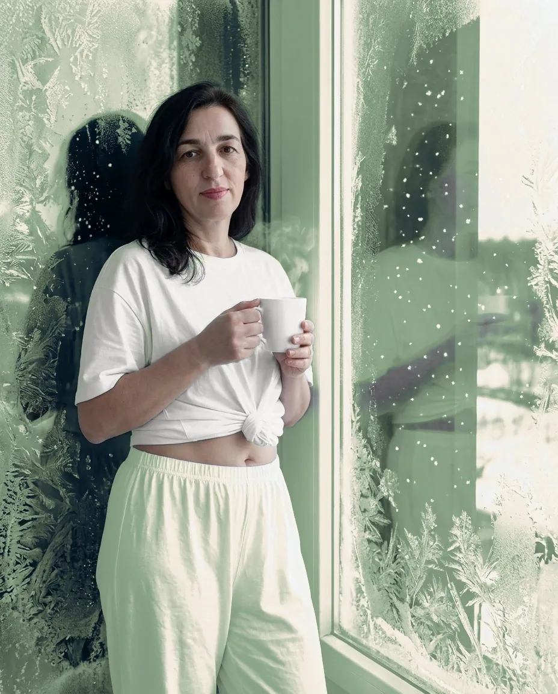
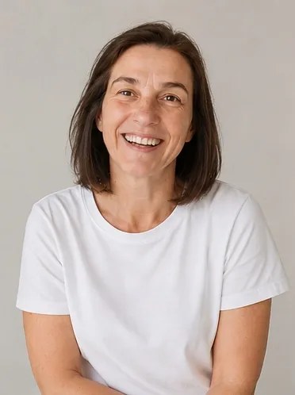

Вы уже пробовали разные способы, но не поняли, что подходит именно вам

Для тех, кто устал от диет
Здесь я делюсь статьями о питании, снижении веса, энергии и восстановлении.
Возможно, вы узнаете себя в этих словах
Вы уже пробовали разные способы, но не поняли, что подходит именно вам
Вы устали себя ограничивать и снова сталкиваться со срывами
Вам нужен проводник, который поможет разобраться, а не тренер-надзиратель
Цель — помочь вам лучше понять своё питание и постепенно вернуть энергию и уверенность
Больше понимания своих привычек питания
Движение к большей лёгкости и энергии
Забота о себе без жёстких диет и чувства вины
Гибкий подход помогает постепенно перестраивать пищевые привычки, не отказываясь от любимых блюд
В канале Алевтина делится статьями о привычках питания, снижении веса, энергии и восстановлении
Почему бывает сложно отказаться от сладкого и как менять привычки без резких запретов
Идеи завтраков и небольших изменений в повседневном питании
Личные заметки о балансе между делами, отдыхом и заботой о себе

Я консультант по ЗОЖ. Изучаю и практикую принципы питания и помогаю женщинам постепенно менять пищевые привычки — без голода, строгих запретов и чувства вины.
Более 10 лет в теме правильного питания и ЗОЖ
Честно о том, чего не будет в подходе Алевтины
Подпишитесь на канал Алевтины о питании, снижении веса, энергии и балансе
Подписка бесплатная
Владелец сайта — Алевтина